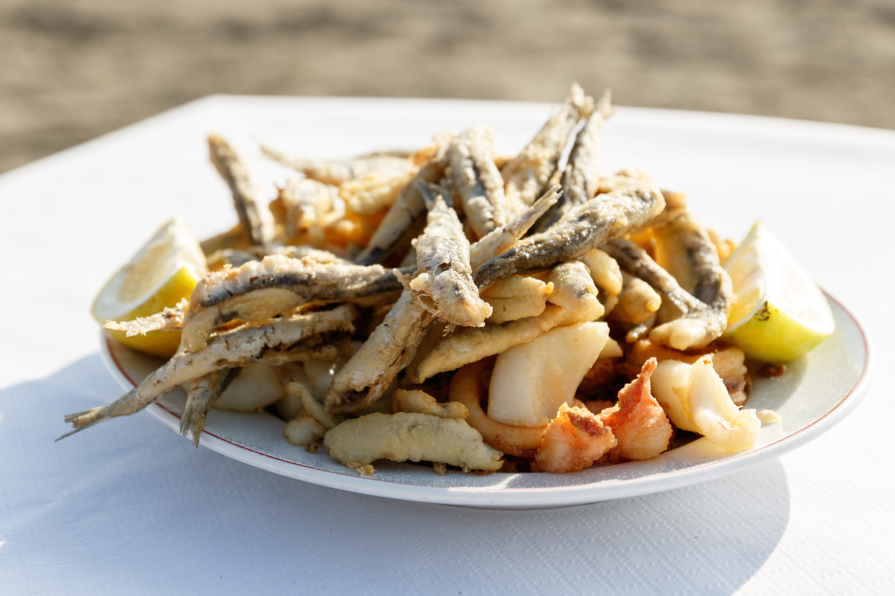
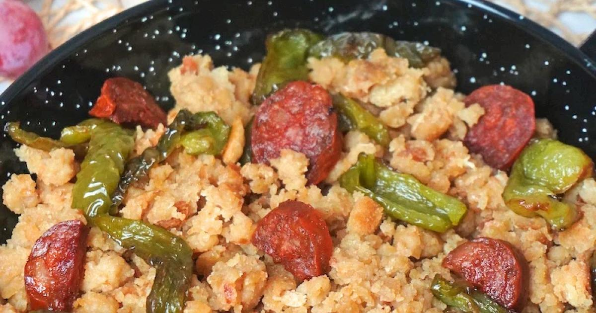
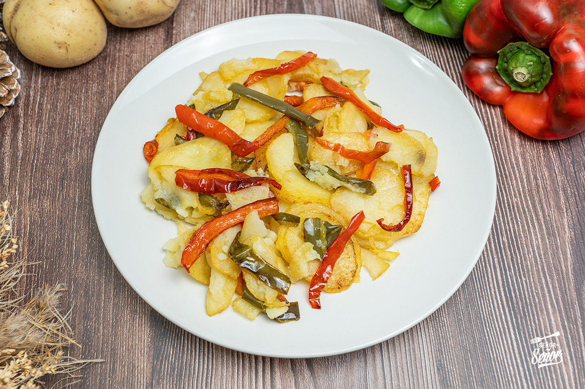
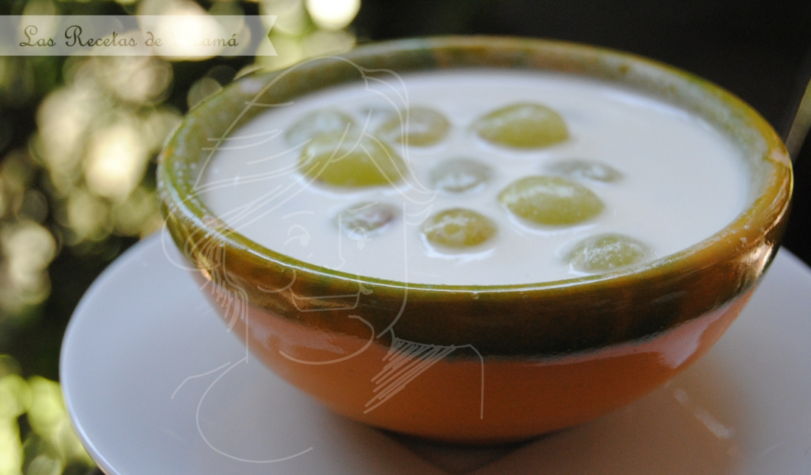

Crema fría de tomate, pan y aceite de oliva virgen extra...

Variedad de pescado de la costa seleccionado diariamente...

Receta tradicional de migas de harina de sémola...

Patatas a lo pobre tradicional

ajo tradicional